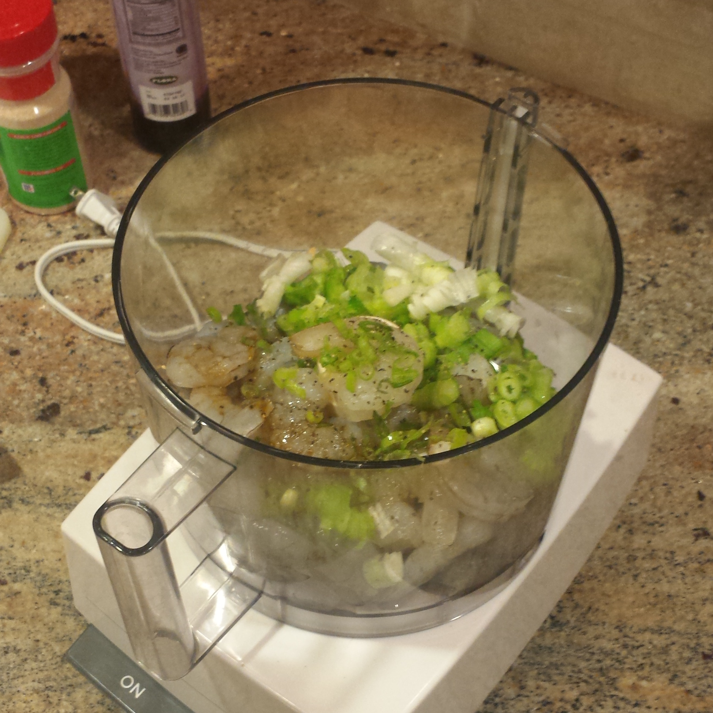
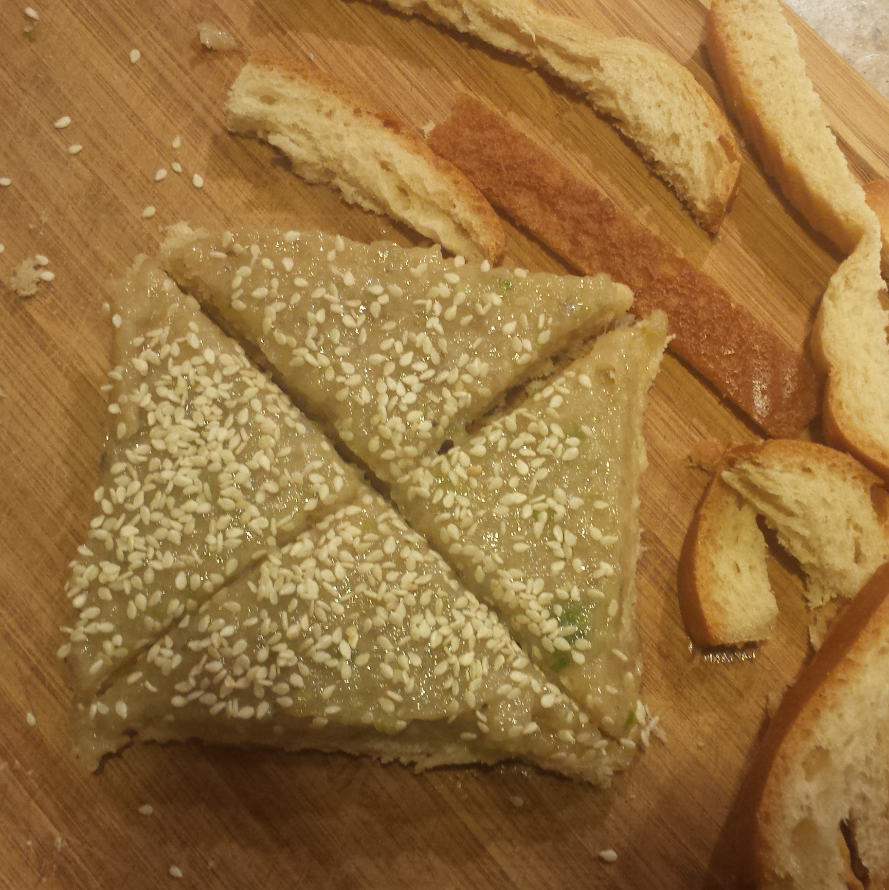

True story -- I was so excited to eat this that I forgot to take a photograph of the final toast. Oopsies! I had it plated all nicely too; I spiraled the triangles around in a straw bread basket. But I promise this recipe is mouthwateringly delicious. I've turned it into a family tradition that we make once a year. It's simpler than a lot of other shrimp toast recipes I've seen, especially in terms of number of ingredients in the shrimp puree, but I think this balance best highlights the shrimp perched atop the crunchy fried toast. Happy cooking!
Servings: 4 humans who really love shrimp toast
Ingredients:
Oil, for frying. You will need enough to have about 1.5 inches deep in the pan of your choice.
5 slices white bread, plus extra in case of extra shrimp spread
16 large shrimp, peeled and deveined
1 egg white (from 1 large egg)
1/8 tsp. ground ginger
1 tbsp. soy sauce
1/4 tsp. salt
1/4 tsp. black pepper
1/8 c. scallions, thinly sliced
1 bottle white sesame seeds (you will have leftovers)
Directions:
Heat oil in a deep pan over medium heat.
Remove the crust from the bread. Set aside. (We will use this for testing the temperature of the oil!)
Cut each bread slice into 4 triangles by cutting along each diagonal. Set aside.
In a medium food processor, place shrimp, egg, ginger, soy sauce, salt, black pepper, and scallions. Puree until fairly smooth. Adjust any of the seasonings to your preference, but make sure not to overpower the shrimp!
Top each bread triangle with the shrimp puree. You want to cover 1 side of the triangle entirely (make sure to get the corners!) with a thickness about the same as the bread (1:1 ratio of bread to shrimp).
Sprinkle with sesame seeds, as little or as much as you'd like.
Time to fry! To test your oil, dip in one of the crusts. If it immediately starts to bubble, it's ready to go! (If it doesn't do much, it's not hot enough yet, and if it starts to spatter, it's too hot! Adjust from here, but it also doesn't hurt to check the oil while you're prepping the shrimp toast.)
Making sure not to overcrowd the pan, place shrimp toast in the oil shrimp side down. Fry until shrimp is cooked through and bread edges start to turn golden about 1.5 minutes. Flip, and fry bread-side down until golden.
Remove from oil, and place on a paper towel-lined plate to drain excess oil. Place in covered serving dish, and continue frying until you're out of toast.
Enjoy this delicious treat! (Yes, it's unhealthy, but it's so worth it on a special occasion.)
Note:My family made this as part of a homemade pu pu platter! In addition to the shrimp toast, we had spare ribs, mini chicken wings, wonton soup, and garlic-y green beans. Again, not the healthiest, but it was for a special meal and tasted absolutely delicious.

Making the shrimp puree.

Triangles are ready to be fried!Frying to golden perfection.